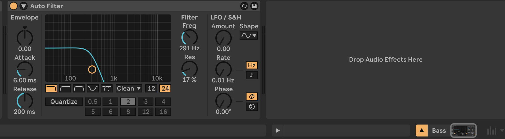
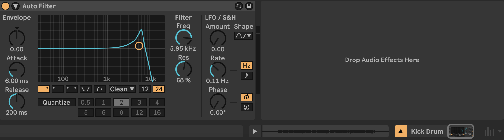
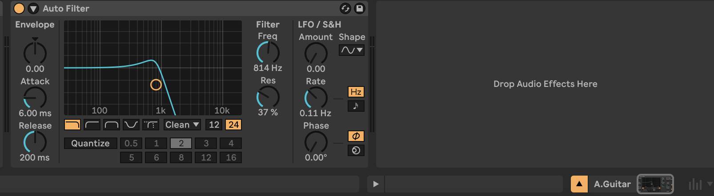
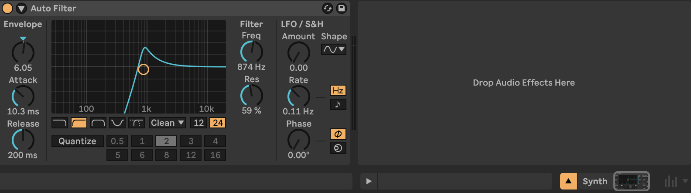
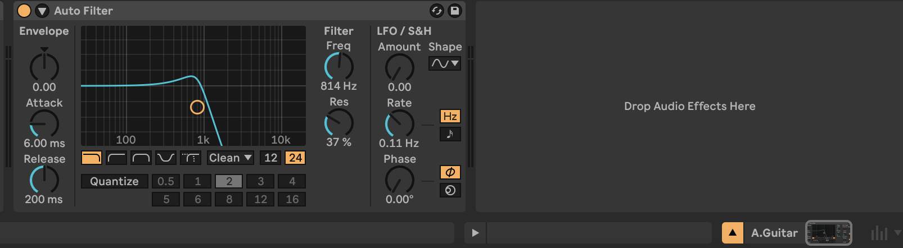
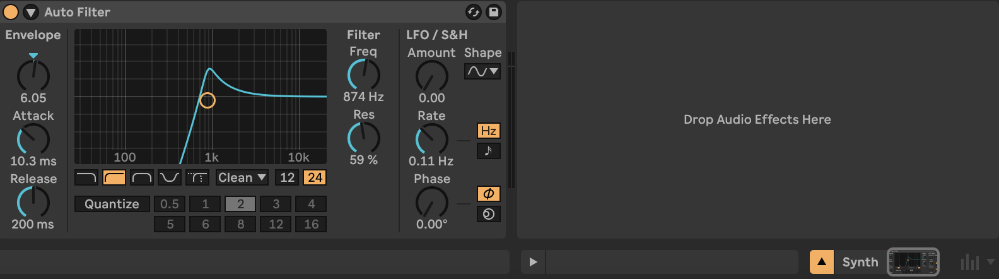

The way I approached mixing our cover of Alice in Chains's "Would?" came from a place of wanting to hear every instrument. While I do assume that this is the approach that most mxing engineers take, I quickly came to realize that mixing eight different tracks to achieve this would be trickier than I imagined. I wanted all of the instruments to shine and to service the song in the best way possible, and getting all of the tracks to contribute their own respective details was something I really honed in on. As far as a template or inspiration for a mixing approach, I tried using the Tame Impala approach in that I really wanted the drums to sound punchy and captivating. That proved to be more difficult without compression, but that was still an overarching reason for the decisions I took when mixing the drums.
 
I need to start off by mentioning that I labeled the four differnt drum tracks
based on the parts of the kit that sounded the most present in that track. For
example, the snare drum track also contains sounds from the rest of the kit
(and even some bleed from the electric guitar). This also heavily informed my
mixing approach because more than one drum track carried bleed from the rest of
the kit, and it seemed to me that I could use this to my advantage in regards to
panning decisions. One thing I eventually settled on, was to lower the volume on
all four drum tracks a bit. This was to give the other instruments more presence
without raising their volumes and possibly cause clipping.
As far as the snare track itself, I was about to remove a bit of high end and raise the
resonance through a low-pass filter, but I felt like I had to discard the idea because
of the electric guitar bleed. The most I ended up doing was panning the snare to the right.
This was because I eventually wanted to pan the kick drum to the right and have those towards
sections balance each other out.
The Kick drum itself sounded really isolated, and the detail it added was more
subtle compared to what the rest of the drums did. I panned it to left,
and added no filter since I felt it sounded really good on its own.
Moving on to the hi-hat and ride-related tracks, I panned these right and left respectively.
Since the two tracks carried the aforementioned sound from the rest of the kit, it didn't
feel right to filter any of them. By this point I was liking the presence that the drums were having
towards the rest of the song.
 



Out of the 'pitched' instruments, I worked on the bass first to establish the low-end sound.
While playing with a low pass filter, I realized that I could use it to get less rumble and make
the bass sounds a bit more "sophisticated"? I really liked how the bass sounded this way, it felt
like it was already present enough without the need for panning.
Then I moved on to the electric guitar. This to me felt the easiest to mix because it already featured
a lot of high end, and I already knew I wanted to pan it to the left because I was going to complement
it with the acoustic guitar. I removed a bit of low end just because the snare track already had that
covered through the bleed, and I wanted to see if I could give the guitar a sort of 'chorus' effect
this way (it didn't).
Because of the electric guitar's high end, I wanted the acoustic guitar to reinforce more mid-range
frequencies so I panned it left and gave it a low-pass filter. I felt like this worked out really well.
I felt that the synth should adopt a more complementary role (in order for every instrument to shine through, including itself),
so I used a high pass filter to keep it in a range close to that of the electric guitar. I thought about treating it as a sort
of background trumpet sound after hearing it with the HPF so I just brought the volume down a bit and brought the
resonance up to really bring out the synth’s decay.
Overall, I felt satisfied with the resulting mix. While I may have been able to adjust some parameters differently in order to get things sounding better, I think I was at least able to meet my goal of getting every instrument heard throughout the entire track.